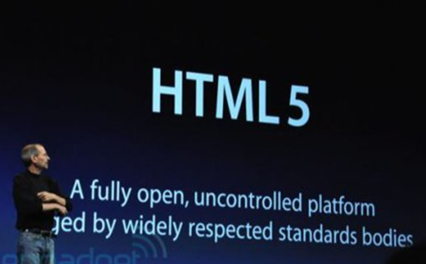
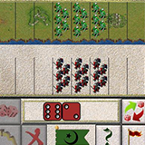
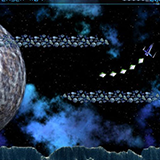
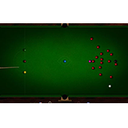
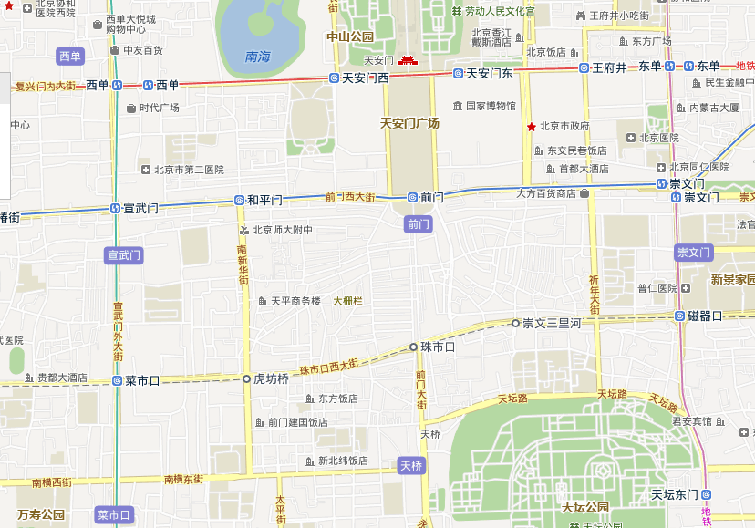

你的浏览器不满足impress.js需要的功能特征，所以你只能看到一个简单表现的版本。
为了达到最佳的体验效果，请使用最新的谷歌浏览器 或 苹果Safari浏览器，或最新版的火狐浏览器 10 和 IE 10 也可以。
HTML5
有两个被视为 html5 的标志性事件：
1、2007年发布的 iPhone 拒绝支持 FLASH，只支持 HTML5；
2、2011年，Adobe 宣布放弃 FLASH 的移动端项目，转而开发 HTML5 工具。
html5就是为了web app 而生的，HTML5强势崛起 将成为移动互联网未来趋势。
HTML5
1、2007年发布的 iPhone 拒绝支持 FLASH，只支持 HTML5

“Next,I‘d like to talk about App Store. Before I do that,
I want to make something clear.We support two platforms.HTML5
-- it's a completely open, uncontrolled platform. And we fully support it.”
HTML5
2、2011年，Adobe 宣布放弃 FLASH 的移动端项目，转而开发 HTML5 工具。
html5就是为了web app 而生的，HTML5强势崛起 将成为移动互联网未来趋势。
2011年11月9号，Adobe副总裁兼交互开发业务总经理丹尼·维诺科(Danny Winokur)
在公司网站上发表博客称，Adobe将不再为移动浏览器开发Flash Player，公司未来的发展方向是桌面浏览器、移动应用和HTML5。
HTML5简介
HTML5 ~= HTML + CSS + JS
我们平时谈到的html5一般指以html5、css3、Javascript为代表的最新Web前端技术(标准)。
其中，html5和css3主要负责页面结构、表现，Javascript负责行为。
HTML5 = Height+Tight+Might+Light+Fight
HTML 5
有什么神奇之处？
HTML5新特性
语义特性：HTML5赋予网页更好的意义和结构。作为HTML5的前端和中心，语义学能够赋予框架结构以意义。
应用缓存，本地存储，索引数据库和文件应用程序接口的帮助下，HTML5应用甚至能在没有因特网连接的情况下工作
HTML5新特性
从地理定位开始，HTML5能够让应用程序访问连结到你计算机（智能设备）上的任何设备。从声音视频输入到麦克风和相机等。
更有效率的连结性将能带来更实时的聊天，更快的游戏速度以及更好的沟通交流。
HTML5新特性
在SVG, Canvas, WebGL和CSS3 3D效果这些特性之间，你一定能找到让你美不胜收的创意效果。
HTML5新特性
通过大量诸如Web Workers和XMLHttpRequest 2这样的技术让你的WEB应用和动态网站更加快速高效。
在不牺牲结构和性能的情况下，CSS3提供了大量的样式效果和加强你的网络应用。
HTML5可以做什么？
HTML5 应用
开发丰富多彩的html5游戏



HTML5 应用
位置定位（IP）:百度地图

HTML5 应用
- 移动领域的应用web APP
实时通讯
- 数字绘图
硬件支持（webRTC）
- 在线图像处理
HTML5 canvas
什么是 Canvas？
canvas是HTML5中的新元素，你可以使用javascript用它来绘制图形、图标、以及其它任何视觉性图像。
它也可用于创建图片特效和动画。
HTML5存在的意义
html5目前是移动端的唯一 Web 标准。尽管面临各种各样兼容性的问题，html5仍然
被不少人视为“荒漠中的甘露”。

HTML5大势所趋
- -一次开发，全平台应用，大大降低开发成本
- -实时在线、无需下载、无需更新
- - 各浏览器厂商的支持， 发展迅速
- -基于SVG、Canvas、WebGL及CSS3的3D功能
- -HTML5是社交游戏发展的未来，尤其是针对智能手机而言
- - 与原生客户端的比较，易于推广，更新方便
- - 与Flash比较，不需要Plug-in就能执行，Adobe已放弃移动flash